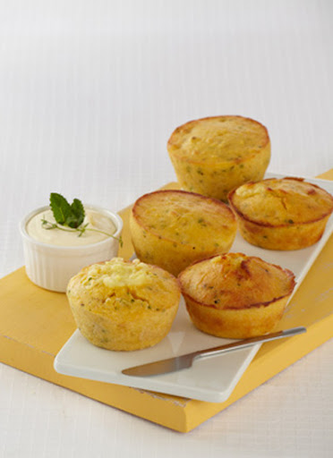
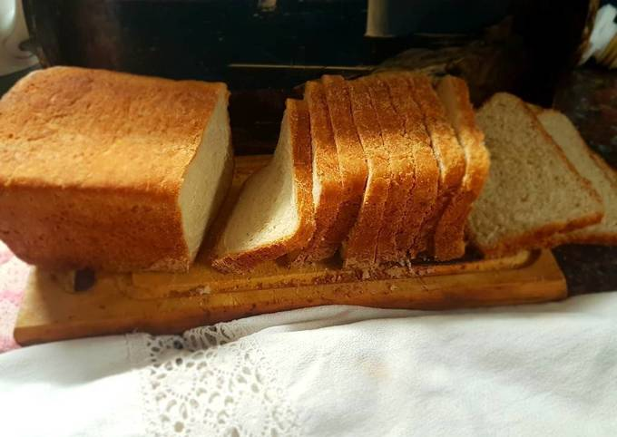
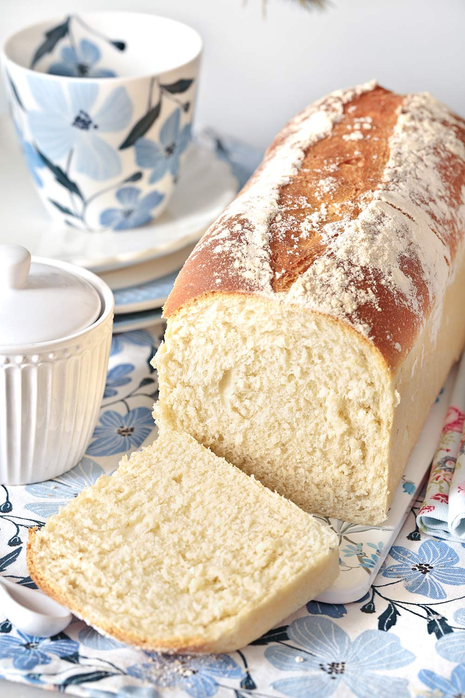
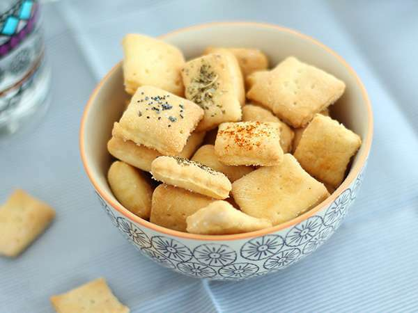
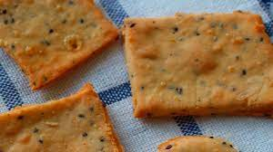

Recetas Saladas
Para los paladares más exigentes...
Pizza

Pizza

La pizza más italiana del condado, con base crocante y masa esponjosa. ¿Te la vas a perder?
Ingredientes
- Huevo 1
- Premezcla 350 gr
- Leche en polvo 30 gr
- Harina de Garbanzos 20 gr
- Sal a gusto
- Aceite dos cucharadas
- Levadura seca 10 gramos (1 sobre)
- Agua tibia 200 cm3 para espumar la levadura y 200 cm3 para el resto de la receta
- Azúcar 1 cucharadita
Procedimiento
- Mezclar la levadura con 200 cm3 de agua tibia y 1 cucharadita de azúcar. Dejar descansar por 15 minutos. Luego de ese lapso, si espumó, la utilizamos. De lo contrario, se deberá tirar y comenzar de nuevo ya que la levadura no es apta para el consumo (se pudrió, básicamente)
- Mezclar bien los secos y luego agregar la levadura espumada
- Unir el huevo y batir bien
- Colocar en una pizzera previamente aceitada y dejar leudar por media hora aproximadamente
- Mientras, precalentar el horno a 200º y luego de la media hora, comenzar a hornear la pizza
- Luego de 10 minutos, colocar la salsa de tomate y el queso, jamón o lo que quieras sobre la pizza
- Cocinar hasta que se gratine el queso y listo, ¡buen apetito!
Muffin de queso
Muffin de queso

Versión salada de un clásico para picar
Ingredientes
- Huevos 2
- Queso rallado media taza
- Aceite neutro un cuarto taza
- Leche media taza
- Premezcla comercial 2 tazas
- Hierbas como orégano, romero o tomillo a elección
- Polvo para Hornear 2 cucharadas
Procedimiento
- Batir los huevos con el queso rallado
- Agregar el aceite y la leche y seguir batiendo
- Si les gusta, pueden agregar las hierbas frescas o secas que quieran
- Agregar de a poco la premezcla con el polvo de hornear e integrar bien con una espátula
- Hornear a 180º durante 40 minutos aproximadamente
- Preparate unos mates y disfrutá!
Pan

Pan

El mejor pan, húmedo y esponjoso
Ingredientes
- Huevo 1
- Premezcla 350 gr
- Leche en polvo 30 gr
- Harina de Garbanzos 20 gr
- Sal a gusto
- Aceite dos cucharadas
- Levadura seca 10 gramos (1 sobre)
- Agua tibia 200 cm3 para espumar la levadura y 200 cm3 para el resto de la receta
- Azúcar 1 cucharadita
Procedimiento
- Mezclar la levadura con 200 cm3 de agua tibia y 1 cucharadita de azúcar. Dejar descansar por 15 minutos. Luego de ese lapso, si espumó, la utilizamos. De lo contrario, se deberá tirar y comenzar de nuevo ya que la levadura no es apta para el consumo (se pudrió, básicamente)
- Mezclar bien los secos y luego agregar la levadura espumada
- Unir el huevo y batir bien
- Colocar en un molde de budín inglés y dejar leudar por media hora aproximadamente
- Mientras, precalentar el horno a 200º y luego de la media hora, comenzar a hornear el pan
- Cocinar hasta que la superficie se dore y listo, ¡buen apetito!
Galletitas saladas

Pizza

Galletias crocantes y súper versátiles
Ingredientes
- Huevo 1
- Premezcla 250 gr
- Manteca 100 gr
- Sal a gusto
- Especias a gusto (orégano, tomillo, queso rallado, pimentón, lo que quieras!)
Procedimiento
- Mezclar la manteca pomada con el resto de los ingredientes hasta obetener una masa homogénea
- Si hace calor, llevar a la heladera un rato, tapada con un repasador o film
- Estirar sobre la mesada con premezcla y cortar las galletitas a gusto
- Colocar en un molde previamente enmantecado
- Llevar a horno precalentado por aproximadamente 10 a 15 minutos